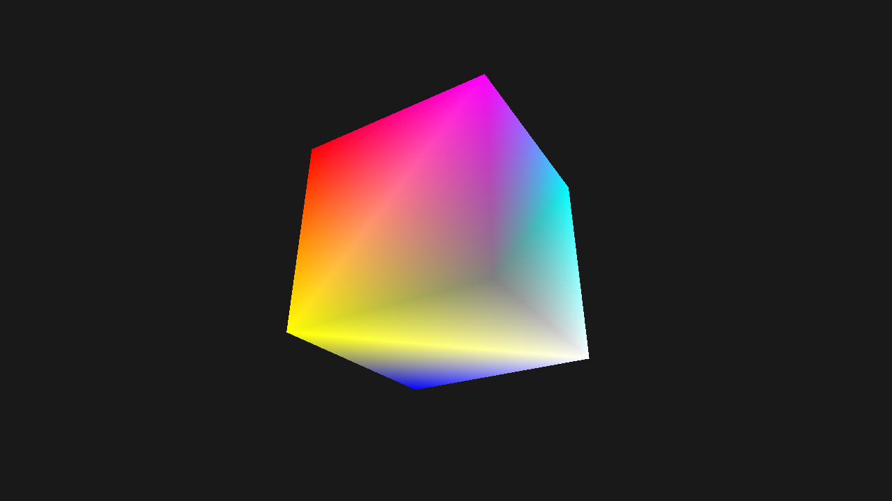

Spinning Cube
In this tutorial, you'll learn how to render a rotating 3D cube using Zenith.NET. We'll introduce constant buffers for passing transformation matrices to the GPU.
Overview
We'll create a SpinningCubeRenderer class that:
- Defines 3D cube geometry with vertex and index buffers
- Creates a constant buffer for MVP (Model-View-Projection) matrices
- Updates the rotation every frame
- Uses depth testing for correct 3D rendering
The Renderer Class
Create a new file Renderers/SpinningCubeRenderer.cs:
namespace ZenithTutorials.Renderers;
internal unsafe class SpinningCubeRenderer : IRenderer
{
private const string ShaderSource = """
struct MVPConstants
{
float4x4 Model;
float4x4 View;
float4x4 Projection;
};
struct VSInput
{
float3 Position : POSITION0;
float4 Color : COLOR0;
};
struct PSInput
{
float4 Position : SV_POSITION;
float4 Color : COLOR0;
};
ConstantBuffer<MVPConstants> mvp;
PSInput VSMain(VSInput input)
{
float4 worldPos = mul(float4(input.Position, 1.0), mvp.Model);
float4 viewPos = mul(worldPos, mvp.View);
PSInput output;
output.Position = mul(viewPos, mvp.Projection);
output.Color = input.Color;
return output;
}
float4 PSMain(PSInput input) : SV_TARGET
{
return input.Color;
}
""";
private readonly Buffer vertexBuffer;
private readonly Buffer indexBuffer;
private readonly Buffer constantBuffer;
private readonly ResourceLayout resourceLayout;
private readonly ResourceTable resourceTable;
private readonly GraphicsPipeline pipeline;
private float rotationAngle;
public SpinningCubeRenderer()
{
Vertex[] vertices =
[
// Front face
new(new(-0.5f, -0.5f, 0.5f), new(1.0f, 0.0f, 0.0f, 1.0f)),
new(new( 0.5f, -0.5f, 0.5f), new(0.0f, 1.0f, 0.0f, 1.0f)),
new(new( 0.5f, 0.5f, 0.5f), new(0.0f, 0.0f, 1.0f, 1.0f)),
new(new(-0.5f, 0.5f, 0.5f), new(1.0f, 1.0f, 0.0f, 1.0f)),
// Back face
new(new(-0.5f, -0.5f, -0.5f), new(1.0f, 0.0f, 1.0f, 1.0f)),
new(new( 0.5f, -0.5f, -0.5f), new(0.0f, 1.0f, 1.0f, 1.0f)),
new(new( 0.5f, 0.5f, -0.5f), new(1.0f, 1.0f, 1.0f, 1.0f)),
new(new(-0.5f, 0.5f, -0.5f), new(0.5f, 0.5f, 0.5f, 1.0f))
];
uint[] indices =
[
// Front
0, 1, 2, 0, 2, 3,
// Back
5, 4, 7, 5, 7, 6,
// Left
4, 0, 3, 4, 3, 7,
// Right
1, 5, 6, 1, 6, 2,
// Top
3, 2, 6, 3, 6, 7,
// Bottom
4, 5, 1, 4, 1, 0
];
vertexBuffer = App.Context.CreateBuffer(new()
{
SizeInBytes = (uint)(sizeof(Vertex) * vertices.Length),
StrideInBytes = (uint)sizeof(Vertex),
Flags = BufferUsageFlags.Vertex | BufferUsageFlags.MapWrite
});
vertexBuffer.Upload(vertices, 0);
indexBuffer = App.Context.CreateBuffer(new()
{
SizeInBytes = (uint)(sizeof(uint) * indices.Length),
StrideInBytes = sizeof(uint),
Flags = BufferUsageFlags.Index | BufferUsageFlags.MapWrite
});
indexBuffer.Upload(indices, 0);
constantBuffer = App.Context.CreateBuffer(new()
{
SizeInBytes = (uint)sizeof(MVPConstants),
StrideInBytes = (uint)sizeof(MVPConstants),
Flags = BufferUsageFlags.Constant | BufferUsageFlags.MapWrite
});
resourceLayout = App.Context.CreateResourceLayout(new()
{
Bindings = BindingHelper.Bindings
(
new ResourceBinding() { Type = ResourceType.ConstantBuffer, Count = 1, StageFlags = ShaderStageFlags.Vertex }
)
});
resourceTable = App.Context.CreateResourceTable(new()
{
Layout = resourceLayout,
Resources = [constantBuffer]
});
InputLayout inputLayout = new();
inputLayout.Add(new() { Format = ElementFormat.Float3, Semantic = ElementSemantic.Position });
inputLayout.Add(new() { Format = ElementFormat.Float4, Semantic = ElementSemantic.Color });
using Shader vertexShader = App.Context.LoadShaderFromSource(ShaderSource, "VSMain", ShaderStageFlags.Vertex);
using Shader pixelShader = App.Context.LoadShaderFromSource(ShaderSource, "PSMain", ShaderStageFlags.Pixel);
pipeline = App.Context.CreateGraphicsPipeline(new()
{
RenderStates = new()
{
RasterizerState = RasterizerStates.CullBack,
DepthStencilState = DepthStencilStates.Default,
BlendState = BlendStates.Opaque
},
Vertex = vertexShader,
Pixel = pixelShader,
ResourceLayout = resourceLayout,
InputLayouts = [inputLayout],
PrimitiveTopology = PrimitiveTopology.TriangleList,
Output = App.SwapChain.FrameBuffer.Output
});
}
public void Update(double deltaTime)
{
rotationAngle += (float)deltaTime;
}
public void Render()
{
Matrix4x4 model = Matrix4x4.CreateRotationY(rotationAngle) * Matrix4x4.CreateRotationX(rotationAngle * 0.5f);
Matrix4x4 view = Matrix4x4.CreateLookAt(new(0, 0, 3), Vector3.Zero, Vector3.UnitY);
Matrix4x4 projection = Matrix4x4.CreatePerspectiveFieldOfView(float.DegreesToRadians(45.0f), (float)App.Width / App.Height, 0.1f, 100.0f);
constantBuffer.Upload([new MVPConstants() { Model = model, View = view, Projection = projection }], 0);
CommandBuffer commandBuffer = App.Context.Graphics.CommandBuffer();
commandBuffer.BeginRenderPass(App.SwapChain.FrameBuffer, new()
{
ColorValues = [new(0.1f, 0.1f, 0.1f, 1.0f)],
Depth = 1.0f,
Stencil = 0,
Flags = ClearFlags.All
}, resourceTable);
commandBuffer.SetPipeline(pipeline);
commandBuffer.SetResourceTable(resourceTable);
commandBuffer.SetVertexBuffer(vertexBuffer, 0, 0);
commandBuffer.SetIndexBuffer(indexBuffer, 0, IndexFormat.UInt32);
commandBuffer.DrawIndexed(36, 1, 0, 0, 0);
commandBuffer.EndRenderPass();
commandBuffer.Submit(waitForCompletion: true);
}
public void Resize(uint width, uint height)
{
}
public void Dispose()
{
pipeline.Dispose();
resourceTable.Dispose();
resourceLayout.Dispose();
constantBuffer.Dispose();
indexBuffer.Dispose();
vertexBuffer.Dispose();
}
}
/// <summary>
/// Vertex structure with position and color data.
/// </summary>
[StructLayout(LayoutKind.Sequential)]
file struct Vertex(Vector3 position, Vector4 color)
{
public Vector3 Position = position;
public Vector4 Color = color;
}
/// <summary>
/// MVP transformation matrices.
/// </summary>
[StructLayout(LayoutKind.Sequential)]
file struct MVPConstants
{
public Matrix4x4 Model;
public Matrix4x4 View;
public Matrix4x4 Projection;
}
Running the Tutorial
Update your Program.cs to run the SpinningCubeRenderer:
using ZenithTutorials;
using ZenithTutorials.Renderers;
App.Run<SpinningCubeRenderer>();
App.Cleanup();
Run the application:
dotnet run
Result

Code Breakdown
MVP Constants Structure
[StructLayout(LayoutKind.Sequential)]
file struct MVPConstants
{
public Matrix4x4 Model;
public Matrix4x4 View;
public Matrix4x4 Projection;
}
The MVP (Model-View-Projection) matrices transform vertices from object space to screen space:
| Matrix | Purpose |
|---|---|
| Model | Object rotation, scale, and position in the world |
| View | Camera position and orientation |
| Projection | 3D to 2D projection (perspective or orthographic) |
Constant Buffer
constantBuffer = App.Context.CreateBuffer(new()
{
SizeInBytes = (uint)sizeof(MVPConstants),
StrideInBytes = (uint)sizeof(MVPConstants),
Flags = BufferUsageFlags.Constant | BufferUsageFlags.MapWrite
});
Constant buffers pass data from the CPU to shaders. Use BufferUsageFlags.Constant and upload new data each frame as needed.
Cube Geometry
// 8 vertices for the cube corners
Vertex[] vertices = [ ... ];
// 36 indices (6 faces × 2 triangles × 3 vertices)
uint[] indices =
[
// Front
0, 1, 2, 0, 2, 3,
// Back
5, 4, 7, 5, 7, 6,
// ... remaining faces
];
A cube has 8 unique vertices and 6 faces. Each face is made of 2 triangles, requiring 6 indices per face (36 total).
Shader MVP Transformation
ConstantBuffer<MVPConstants> mvp;
PSInput VSMain(VSInput input)
{
float4 worldPos = mul(float4(input.Position, 1.0), mvp.Model);
float4 viewPos = mul(worldPos, mvp.View);
PSInput output;
output.Position = mul(viewPos, mvp.Projection);
output.Color = input.Color;
return output;
}
C# Matrix4x4 and Slang (with -matrix-layout-row-major) both use row-major layout, so the multiplication order is vector * matrix. The vertex shader applies transformations in order: Model → View → Projection. Use ConstantBuffer<T> in Slang to access structured constant data.
Frame Update
public void Update(double deltaTime)
{
rotationAngle += (float)deltaTime;
}
The Update method is called each frame with the elapsed time. Accumulating deltaTime creates smooth, frame-rate-independent rotation.
Creating Matrices
Matrix4x4 model = Matrix4x4.CreateRotationY(rotationAngle) * Matrix4x4.CreateRotationX(rotationAngle * 0.5f);
Matrix4x4 view = Matrix4x4.CreateLookAt(new(0, 0, 3), Vector3.Zero, Vector3.UnitY);
Matrix4x4 projection = Matrix4x4.CreatePerspectiveFieldOfView(float.DegreesToRadians(45.0f), (float)App.Width / App.Height, 0.1f, 100.0f);
| Method | Description |
|---|---|
CreateRotationY/X |
Rotate around an axis |
CreateLookAt |
Position camera at (0,0,3) looking at origin |
CreatePerspectiveFieldOfView |
45° FOV perspective projection |
Back-Face Culling
RasterizerState = RasterizerStates.CullBack
For closed 3D objects, enable back-face culling to skip rendering triangles facing away from the camera, improving performance.
What You've Learned
Congratulations! You've completed the Getting Started tutorials. You now understand:
- Creating vertex and index buffers
- Compiling shaders with Slang
- Building graphics pipelines
- Loading textures and creating samplers
- Resource binding with layouts and tables
- Using constant buffers for per-frame data
- MVP transformations for 3D rendering
Next Steps
Continue with intermediate topics:
- Compute Shader - Run general-purpose GPU computations for image processing
Source Code
Tip
View the complete source code on GitHub: SpinningCubeRenderer.cs